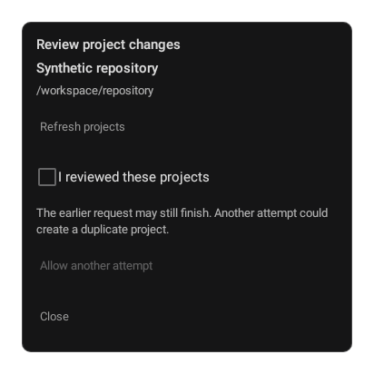
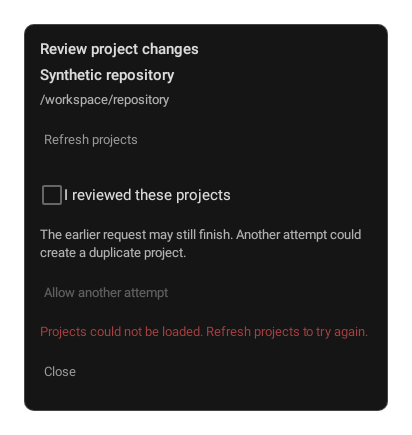
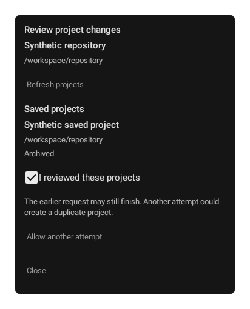

Supplemental Android-only recovery states at 6a656667615f5336e69b6a60f766a3c7c6806464. Real production recovery composable with synthetic state and callbacks, Robolectric SDK34 native-graphics modal decor draws. Not full Activity, installed-device, IME, OS compositor or live Gateway acceptance. Dark mono theme only.
No equivalent durable review control exists at inspected Desktop 41dfcf2c. Hashes and provenance. Earlier paired report, original pins unchanged.


